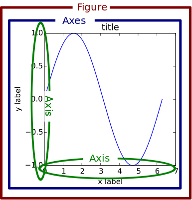

Python - Matplotlib
Table of Contents
Background
Matplotlib is a popular python package for figure plot and data visualization.
Installation
pip install matplotlib
Submodules
Matplotlib comes with a series of submodules, e.g.,
matplotlib.pyplotis the counterpart of Matlab in matplotlib, which is essentially a collection of functions similar to Matlab.matplotlib.pylabis a convenience module which importsmatplotlib.pyplot(for plotting) andnumpy(for array related operations) in a single name space.
General Concepts
In Matplotlib, there are some important concepts which can be illustrated in Figure 1. A typical matplotlib Figure is comprised of a variety of components, as show in 2.

Figure 1: Concepts in a figure in Matplotlib (from https://matplotlib.org/1.5.1/faq/usage_faq.html)

Figure 2: Components of a figure in Matplotlib (from https://matplotlib.org/stable/tutorials/introductory/usage.html)
Figure
A
Figureobject is essentially a canvas on which plot operations are performed. Clearly, it consists of one or moreAxesobjects.import matplotlib.pyplot as plt # Create an empty Figure object without any Axes. fig = plt.figure() fig = plt.figure(figsize=(WIDTH, HEIGHT), dpi=DPI) # Create a Figure object including one Axes. fig, ax = plt.subplots() # Create a Figure object including 2 x 3 Axes. fig, ax = plt.subplots(2, 3)
matplotlib.pyplot.gcf()can get the currentFigureobject.
Axes
- Create
Axesobjects.matplotlib.pyplot.subplotsfigure.add_axes
- A
Axesobject consists of a multiplicityAxisobjects, e.g.,- 2
Axisobjects in a 2-dimension plot, e.g.., X-axis and Y-axis. - 3
Axisobjects in a 3-dimension plot, e.g.., X-axis, Y-axis, and Z-axis.
- 2
- A
Figureobject's member functiongca()can get the currentAxesobject. - A
Figureobject's member functionsubplotscan create one or moreAxesobjects. - Member functions
plot(X, Y)set_xlabel("XLABEL")set_ylabel("YLABEL")set_title("TITLE")set_xticks("XTICKS")set_yticks("YTICKS")set_xlim([XMIN, XMAX])set_ylim([YMIN, YMAX])legend()set_prop_cycle(): Set the random seed of colors, e.g.,Nonefor reset to the default.
Axis
Just as its name indicates, a Axis object defines the properties and attributes of a axis, e.g., limits, ticks, and ticklabels.
Interfaces
As written in the tutorial, there are a couple of API styles provided by matplotlib.
Object-oriented (OO) style
Figures and Axes objects are created and their member functions are provoked explicitly.
Pyplot style
matplotlib.pyplot directly provokes its own functions, e.g., plot, xlabel, ylabel, title, legend, etc.
Miscellaneous
Animation
In submodule matplotlib.animation, Animation is a base class for animation making. It has a couple of derived classes.
FuncAnimation
This class generates an animation by repeatedly calling a function.
class matplotlib.animation.FuncAnimation(fig, func, frames=None, init_func=None, fargs=None, save_count=None, *, cache_frame_data=True, **kwargs)
where
figis amatplotlib.figure.Figureobject.funcis a function to call at each frame. Its first argument will be the next value inframes, and other positional arguments can be supplied viafargsparameter. Its signature can bedef func(frame, *fargs) -> iterable_of_artists.framesis an iterable object. Particularly,range(frames)can be simplified by assigning an integer.
Its member function save can save a FuncAnimation object to gif, mp4, etc.
ArtistAnimation
This class produces an animation using a fixed set of Artist object.
Default settings
import matplotlib.pyplot as plt plt.rcParams['font.family'] = "Consolas" plt.rcParams['font.size'] = 12 plt.rcParams['savefig.dpi'] = 300 plt.rcParams['savefig.bbox'] = "tight" plt.rcParams['text.usetex'] = True